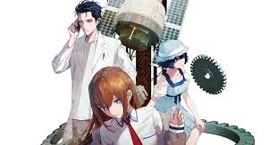
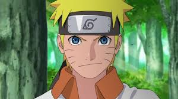

10.Cowboy Bebop :

Cowboy Bebop is a legendary anime series that blends sci-fi, action, and noir storytelling with a jazz-inspired aesthetic. It was directed by Shinichirō Watanabe and produced by Sunrise Studios, first airing in 1998. Plot Summary Set in the year 2071, the story follows a group of bounty hunters (or "cowboys") who travel across the solar system aboard their spaceship, the Bebop, chasing criminals for bounties. Each member of the crew has a mysterious past and personal demons to face. The main character, Spike Spiegel, is a laid-back but deadly bounty hunter with a tragic history tied to a crime syndicate. His partner, Jet Black, is a former cop with a strong sense of justice. Along the way, they team up with Faye Valentine, a cunning gambler with memory loss, Edward, a hyperactive hacker, and Ein, a super-intelligent corgi. Why It So Popular Unique Storytelling Each episode is like a mini-movie with different genres, from comedy to deep philosophical themes. Iconic Music The jazz and blues soundtrack, composed by Yoko Kanno, is one of the best in anime history. Stylish Action The series blends martial arts, gunfights, and space battles with smooth animation. Deep Characters Every character has a compelling backstory, especially Spikes past with the Red Dragon Syndicate and his rivalry with Vicious. Timeless Themes It explores loneliness, existentialism, freedom, and redemption, making it resonate with audiences even today. Legacy & Adaptations One of the best anime series of all time, loved by both casual viewers and critics. Inspired many other works, including Western movies and TV series. Netflix released a live-action adaptation in 2021, but it received mixed reviews. Famous Quote "See you, space cowboy..."
9.Your Lie in April

Your Lie in April (Shigatsu wa Kimi no Uso) 🎹💔 Genre: Drama, Romance, Music, Slice of Life Episodes: 22 Studio: A-1 Pictures Aired: 2014–2015 Plot Summary The story follows Kōsei Arima, a piano prodigy who loses the ability to hear the sound of his own playing after his mother’s death. He gives up music and lives a dull life until he meets Kaori Miyazono, a free-spirited and passionate violinist. Kaori brings color back into Kōsei’s world, encouraging him to play again and teaching him to express emotions through music. However, as their bond deepens, Kōsei discovers that Kaori is hiding a heartbreaking secret. The anime takes viewers on an emotional rollercoaster filled with love, music, and loss. Why It’s So Special 🎼 Beautiful Music: Features classical pieces by Chopin, Beethoven, and more, woven into the storytelling. 🎭 Emotional Storytelling: It explores grief, love, and healing in a way that deeply connects with the audience. 🎨 Stunning Animation: Vibrant visuals, especially in musical performances and emotional scenes. 💔 Heartbreaking yet Inspiring: It’s a tearjerker, but it also teaches about embracing life and chasing dreams. Famous Quote: "Maybe there’s only a dark road up ahead. But you still have to believe and keep going. Believe that the stars will light your path, even a little bit." – Kaori
8.Hunter x Hunter

The story follows Gon Freecss, a 12-year-old boy who dreams of becoming a Hunter—an elite individual with special privileges to explore the world, hunt dangerous creatures, and uncover hidden treasures. Gon’s main motivation is to find his father, Ging Freecss, who is a legendary Hunter but abandoned him as a child. On his journey, Gon befriends: Killua Zoldyck – A deadly but kind-hearted assassin from a famous family of killers. Leorio Paradinight – A wannabe doctor with a strong personality. Kurapika – The last survivor of the Kurta Clan, seeking revenge against the Phantom Troupe. Together, they face various life-threatening challenges, from the deadly Hunter Exam to the mysterious Chimera Ants and beyond. Why It's a Masterpiece 🔥 Deep Storytelling: Unlike typical battle shounen, it explores psychological depth, moral dilemmas, and complex themes. 🎭 Unique Power System: Nen is one of the best-crafted power systems in anime, allowing for deep strategic battles. 🎨 Incredible Animation (2011): Madhouse delivers stunning action sequences, especially in fights like Netero vs. Meruem. 🤯 Unexpected Twists: The series isn’t afraid to take dark turns, especially in arcs like Yorknew City and Chimera Ant. 🧠 Memorable Villains: The Phantom Troupe, Hisoka, and Meruem are some of the best-written antagonists in anime history. Popular Arcs (2011 Version) ✅ Hunter Exam Arc – Introduction to the main characters and their first challenges. ✅ Heavens Arena Arc – Gon & Killua learn about Nen and face powerful fighters. ✅ Yorknew City Arc – Kurapika's revenge against the Phantom Troupe. ✅ Greed Island Arc – A game-like adventure with high-stakes battles. ✅ Chimera Ant Arc – One of the most intense and philosophical arcs in anime. ✅ Election Arc – Gon’s final struggle and the introduction of Ging. Famous Quotes: 🔹 "You should enjoy the little detours. Because sometimes, they're the things that matter the most." – Ging Freecss 🔹 "I'm going to find my dad!" – Gon Freecss 🔹 "Fear is not evil. It tells you your weaknesses. And once you know your weaknesses, you can become stronger and kinder." – Gon's mentor, Biscuit
7.Demon Slayer

Demon Slayer: Kimetsu no Yaiba (鬼滅の刃) ⚔️🔥 Genre: Action, Adventure, Fantasy, Shounen Episodes: (Ongoing) Season 1: 26 episodes (2019) Mugen Train Movie (2020) – A direct sequel to Season 1 Season 2: 18 episodes (2021-2022) (Entertainment District Arc) Season 3: 11 episodes (2023) (Swordsmith Village Arc) Season 4 (Hashira Training Arc) – Expected in 2024 Studio: Ufotable (famous for its stunning animation) Plot Summary The story follows Tanjiro Kamado, a kind-hearted boy whose family is slaughtered by demons. His younger sister, Nezuko, is the only survivor but has been turned into a demon. Determined to save her and avenge his family, Tanjiro becomes a Demon Slayer, joining the fight against these supernatural creatures. Along the way, he meets powerful allies: Zenitsu Agatsuma – A cowardly but talented swordsman with lightning-fast attacks. Inosuke Hashibira – A wild, boar-masked warrior with insane strength. The Hashira – Elite Demon Slayers, each with unique breathing styles. Their ultimate enemy is Muzan Kibutsuji, the first and strongest demon who started it all. Why It's So Popular 🔥 Breathtaking Animation – Ufotable’s work is next-level, especially in fight scenes like Rengoku vs. Akaza. 🎭 Emotional Storytelling – Every demon has a tragic backstory, making battles feel deeper. ⚔️ Unique Power System – The Breathing Styles create visually stunning combat sequences. 🎶 Incredible Soundtrack – Songs like Gurenge (by LiSA) and Homura make key moments unforgettable. 👹 Memorable Villains – The Upper Moons (like Doma & Akaza) are among the best anime antagonists. Best Arcs So Far ✅ Final Selection Arc – Tanjiro's intense training to become a Demon Slayer. ✅ Mount Natagumo Arc – The battle against Rui, one of the Twelve Kizuki. ✅ Mugen Train Arc – The heartbreaking battle featuring Rengoku vs. Akaza. ✅ Entertainment District Arc – Spectacular fights against Daki & Gyutaro. ✅ Swordsmith Village Arc – Introduction of new Hashira and Upper Moon demons. Famous Quotes 🗡 "The bond between Nezuko and me can’t be severed by anyone!" – Tanjiro 🔥 "Set your heart ablaze!" – Rengoku ⚡ "I might be a coward, but I’ll protect what matters!" – Zenitsu
6.Steins;Gate
Steins;Gate ⏳🔬 Genre: Sci-Fi, Psychological, Thriller, Drama Episodes: 24 (+ 1 OVA) Studio: White Fox Aired: 2011 Plot Summary Steins;Gate follows Rintarou "Okabe" Okabe, a self-proclaimed mad scientist who accidentally discovers time travel when he and his friends modify a microwave. By sending messages to the past, they unintentionally alter reality, leading to catastrophic consequences. As Okabe tries to fix the timeline, he faces SERN (a secret organization), life-or-death stakes, and heartbreaking sacrifices. His journey becomes a desperate struggle to save those he loves while uncovering the true nature of time travel. Main Characters 🧪 Okabe Rintarou (Hououin Kyouma) – Eccentric, dramatic, but secretly caring; the heart of the story. 💻 Kurisu Makise – A genius scientist with sharp wit and a tsundere personality. 🍌 Mayuri Shiina – Okabe’s childhood friend with an innocent and lovable nature. ⚙️ Itaru "Daru" Hashida – A hacker and comic relief character. 🕵️♂️ Moeka, Suzuha, and others – Key players in the unfolding time-travel conspiracy. Why It’s a Masterpiece ⏳ Best Time-Travel Story – Unlike typical sci-fi, Steins;Gate explains time travel with real-world theories (like John Titor’s ideas and the Butterfly Effect). 💔 Emotional Depth – Okabe’s struggle is heart-wrenching, making every twist intensely personal. 🔗 Slow Start, Epic Payoff – The first half builds up carefully, and the second half explodes with tension and twists. 🔬 Realistic Sci-Fi – Unlike fantasy-based time travel, it references real physics concepts. 🎭 Perfect Blend of Comedy & Drama – Okabe’s quirky personality balances the dark, serious themes. Watch Order (For Maximum Enjoyment) Steins;Gate (2011) – The original and must-watch series. Steins;Gate: Egoistic Poriomania (OVA) – A lighthearted epilogue. Steins;Gate: The Movie – Load Region of Déjà Vu – A sequel movie focusing on Kurisu & Okabe. Steins;Gate 0 (2018) – An alternative timeline exploring Okabe’s darkest struggles. Famous Quotes 🔬 "No one knows what the future holds. That’s why its potential is infinite." – Okabe 💔 "I am mad scientist! It’s so cool! Sonuvabitch!" – Okabe (hilariously iconic) 🕰 "El Psy Kongroo." – Okabe’s cryptic catchphrase Final Thoughts If you love mind-blowing plot twists, deep sci-fi, and emotional storytelling, Steins;Gate is a must-watch. It’s widely considered one of the best anime of all time, especially for fans of psychological thrillers like Death Note or time-travel movies like Interstellar.
5.Naruto / Naruto: Shippuden
Naruto / Naruto: Shippuden 🍥🔥 Genre: Action, Adventure, Fantasy, Shounen Episodes: Naruto (2002–2007) – 220 episodes Naruto: Shippuden (2007–2017) – 500 episodes Boruto: Naruto Next Generations (2017–Present) – A sequel following Naruto’s son Studio: Pierrot Plot Summary The story follows Naruto Uzumaki, a mischievous but determined ninja who dreams of becoming the Hokage (the strongest ninja and leader of his village). However, he is shunned by his village because he carries the Nine-Tails Fox (Kurama), a powerful beast sealed inside him at birth. As Naruto grows, he builds strong friendships with Sasuke Uchiha, a revenge-driven prodigy, and Sakura Haruno, a passionate kunoichi. Together, under the guidance of Kakashi Hatake, they form Team 7 and embark on missions that shape their destiny. In Shippuden, the stakes rise as Naruto faces powerful enemies like Akatsuki, discovers the truth about his parents, and ultimately takes on Madara Uchiha & Kaguya Ōtsutsuki in a battle to save the ninja world. Why It's Legendary 🔥 Amazing Character Development – Naruto evolves from an outcast into a hero and leader. ⚔️ Epic Battles & Power-ups – Rasengan, Sharingan, Sage Mode, and the legendary Susanoo! 😭 Emotional Storytelling – Heartfelt moments like Jiraiya’s fate, Naruto meeting his parents, and Sasuke’s tragic past. 🎭 Complex Villains – Akatsuki, Pain, Obito, and Madara have deep motives beyond just "evil." 👊 Strong Friendships & Rivalries – Naruto & Sasuke’s bond is one of the best in anime history. Key Arcs (Must-Watch) ✅ Chūnin Exam Arc – Introduces iconic fights (Rock Lee vs. Gaara). ✅ Search for Tsunade Arc – Naruto learns Rasengan & meets his legendary mentor, Jiraiya. ✅ Sasuke Retrieval Arc – Naruto vs. Sasuke at the Valley of the End. ✅ Pain’s Assault Arc – One of the best arcs; Naruto achieves Sage Mode and faces Pain. ✅ Fourth Great Ninja War Arc – The ultimate battle with legendary shinobi & Naruto’s final transformation. Famous Quotes 🍜 "I’m not gonna run away, I never go back on my word! That’s my nindō, my ninja way!" – Naruto 🌀 "Those who break the rules are scum, but those who abandon their friends are worse than scum." – Kakashi 🔥 "Power is not will, it is the phenomenon of physically making things happen." – Madara
4.One Piece

One Piece 🏴☠️⚓ Genre: Action, Adventure, Fantasy, Shounen Episodes: Ongoing (1,000+) Manga: Written by Eiichiro Oda, started in 1997 Studio: Toei Animation Aired: 1999 – Present Plot Summary One Piece follows Monkey D. Luffy, a young pirate with a dream to find the legendary treasure, One Piece, and become the King of the Pirates. After eating the Gomu Gomu no Mi (Rubber-Rubber Fruit), Luffy gains the ability to stretch like rubber but loses the ability to swim. To achieve his dream, Luffy sets sail, forming the Straw Hat Pirates, an epic crew of unique and powerful individuals. They face marines, warlords, emperors, and mysterious Devil Fruit users while uncovering deep secrets about the world’s history. Why It's Legendary 🏴☠️ Incredible World-Building – One of the most detailed and expansive worlds in anime. 🔥 Epic Storytelling – Every arc builds upon the next, leading to massive revelations. 😂 Perfect Blend of Comedy & Emotion – Luffy's goofiness balances out the emotional moments. ⚔️ Amazing Battles & Powers – Devil Fruits, Haki, and legendary swordsmen! 😭 Emotional Backstories – Each Straw Hat member has a heartbreaking yet inspiring past. 🧩 Deep Mysteries – The Void Century, D., Poneglyphs, and the One Piece treasure itself! The Straw Hat Pirates Crew 🔥 Monkey D. Luffy – Captain with a rubber body & unbreakable will. ⚔️ Roronoa Zoro – A swordsman aiming to be the world’s strongest. 🌀 Nami – Navigator & weather expert with a tragic past. 💥 Usopp – A sniper and storyteller with insane trick shots. 👨🍳 Sanji – A chef who fights with powerful kicks. 💀 Brook – A living skeleton and musician with a soul-based Devil Fruit. And many more powerful allies! Best Arcs (Must-Watch) ✅ East Blue Arc – Luffy forms his initial crew and sets sail. ✅ Alabasta Arc – The first massive battle against a Warlord, Crocodile. ✅ Enies Lobby Arc – One of the most emotional arcs ("I want to live!" - Robin). ✅ Marineford Arc – The legendary war between the Marines and Whitebeard. ✅ Wano Arc – One of the most beautifully animated and intense battles (Luffy vs. Kaido). Famous Quotes 🏴☠️ "I don't want to conquer anything. I just think the guy with the most freedom in this ocean is the Pirate King!" – Luffy ⚔️ "Nothing happened." – Zoro (after taking all of Luffy's pain) 🔥 "A man dies when he is forgotten." – Dr. Hiluluk Should You Watch One Piece? YES! Even though it has 1,000+ episodes, it’s one of the best adventure anime ever. The story only gets better over time, and Oda’s storytelling is unmatched. If the length feels overwhelming, you can also: 1️⃣ Watch One Pace (a fan edit that removes filler & pacing issues). 2️⃣ Read the manga, which is much faster.
3.Death Note

Death Note 📖☠️ Genre: Psychological, Thriller, Supernatural, Mystery Episodes: 37 Studio: Madhouse Aired: 2006–2007 Plot Summary Death Note follows Light Yagami, a genius high school student who stumbles upon a mysterious black notebook called the Death Note. The book grants him the power to kill anyone simply by writing their name while picturing their face. Light, believing the world is corrupt, decides to use the Death Note to eliminate criminals and become the "God of a new world." However, his actions attract the attention of L, an eccentric but brilliant detective determined to stop him. A high-stakes game of mind battles, deception, and psychological warfare ensues, as Light (known as Kira) and L try to outsmart each other in a battle of wits. Why It's a Masterpiece 🧠 Mind-Blowing Strategies – Light vs. L is one of the best intellectual rivalries in anime. 📖 Unique Concept – The Death Note’s rules create endless possibilities and tension. ⚖️ Moral Dilemmas – Is Light a hero for eliminating criminals or a villain playing God? 😨 Psychological Thriller – Every episode keeps you on edge, questioning what’s right or wrong. 🎭 Iconic Characters – Light, L, and even Ryuk (the shinigami) are unforgettable. Main Characters 📖 Light Yagami (Kira) – A genius who gains the Death Note and believes he can reshape the world. 🔍 L (Lawliet) – The world’s greatest detective, known for his bizarre behavior and unmatched intelligence. ☠️ Ryuk – A Shinigami (death god) who drops the Death Note for entertainment. 🎤 Misa Amane – A famous idol who also gets a Death Note and becomes obsessed with Light. 🕵️ Near & Mello – Successors of L who try to take down Kira after L's demise. Famous Quotes ⚖️ "I am justice! I protect the innocent and those who fear evil. I’m the one who will become the god of a new world!" – Light Yagami 🔍 "You can’t ever win if you’re always on the defensive. To win, you have to attack!" – L ☠️ "Humans are so interesting." – Ryuk Should You Watch It? ✅ If you love psychological mind games like Sherlock Holmes or Code Geass. ✅ If you enjoy dark themes, moral dilemmas, and intense rivalries. ✅ If you prefer short but impactful anime (37 episodes, no filler). ⚠️ Some fans feel the second half (after L’s arc) isn't as strong, but it’s still worth watching. Final Thoughts Death Note is one of the most iconic anime ever, with an unforgettable battle of intellects and a thrilling, unpredictable storyline. If you haven’t watched it yet, you’re in for a dark, psychological ride.
2.Fullmetal Alchemist: Brotherhood

Fullmetal Alchemist: Brotherhood ⚗️🔥 Genre: Action, Adventure, Fantasy, Drama Episodes: 64 Studio: Bones Aired: 2009–2010 Plot Summary In a world where alchemy is a powerful science, two brothers, Edward and Alphonse Elric, commit the ultimate taboo—using alchemy to bring their mother back to life. However, their attempt fails horribly: Edward loses an arm and a leg, while Alphonse loses his entire body, with his soul bound to a suit of armor. Determined to restore their bodies, the Elric brothers set off on a journey to find the legendary Philosopher’s Stone. Along the way, they uncover dark secrets about alchemy, the government, and the true cost of power. Why It's a Masterpiece ⚗️ Perfectly Balanced Storytelling – Action, humor, tragedy, and philosophy blend seamlessly. 🔥 Amazing Character Development – Every character has depth, from heroes to villains. 🎭 Emotional Depth – Brotherhood explores themes of loss, sacrifice, war, and redemption. ⚔️ Incredible Fight Scenes – Alchemy-based combat makes every battle unique and thrilling. 🧩 Deep World-Building & Mysteries – The history of alchemy, homunculi, and Amestris unfolds brilliantly. Main Characters 🔩 Edward Elric – The "Fullmetal Alchemist," a prodigy with a strong will and automail limbs. 🛡 Alphonse Elric – Ed’s kind-hearted younger brother, trapped in a suit of armor. ⚖️ Roy Mustang – The Flame Alchemist, aiming to change the corrupt military system. 🌑 Scar – A vengeful warrior seeking justice for his destroyed homeland. 🦇 Homunculi – Mysterious villains created from the sins of humanity. Must-Watch Arcs ✅ Ishvalan War Arc – Reveals the tragic war that shaped many key characters. ✅ Briggs Arc – Introduces a powerful northern fortress and an epic battle. ✅ Promised Day Arc – The grand climax with insane battles and plot twists. Famous Quotes ⚖️ "A lesson without pain is meaningless. That’s because you can’t gain something without sacrificing something in return." – Edward Elric 🔥 "It’s not wrong to dream. But you have to put your dreams into action. Otherwise, they’re just pointless." – Roy Mustang 💔 "Humankind cannot gain anything without first giving something in return. To obtain, something of equal value must be lost." – Alchemy’s Law of Equivalent Exchange Should You Watch It? ✅ If you love action, deep philosophy, and powerful storytelling. ✅ If you want an anime with no filler and a satisfying ending. ✅ If you’re a fan of Attack on Titan, Naruto, or Hunter x Hunter. ⚠️ Important: Brotherhood follows the original manga closely, while Fullmetal Alchemist (2003) takes a different, darker approach. Brotherhood is the definitive version. Final Thoughts Fullmetal Alchemist: Brotherhood is often considered one of the greatest anime of all time. It has an amazing mix of action, emotion, and philosophy, making it a must-watch for every anime fan.
1.Attack on Titan

Attack on Titan (Shingeki no Kyojin) 🏰⚔️👹 Genre: Action, Dark Fantasy, Drama, Mystery Episodes: 89 (Final Season Part 4 concludes in 2023) Studio: Wit Studio (S1–S3), MAPPA (S4) Aired: 2013 – 2023 Plot Summary For over a century, humanity has lived inside enormous walled cities, protecting themselves from Titans, monstrous humanoid creatures that devour humans. The story follows Eren Yeager, who vows to exterminate all Titans after his hometown is destroyed and his mother is eaten. Alongside his childhood friends, Mikasa Ackerman and Armin Arlert, he joins the Survey Corps, a military unit dedicated to exploring beyond the walls and uncovering the truth behind the Titans. However, as the story unfolds, Eren and his friends realize that the real enemies may not be the Titans, but the secrets hidden within their own world. Why It’s a Masterpiece 🔥 Epic Storytelling & Plot Twists – The story goes from a survival thriller to a deep political and philosophical masterpiece. ⚔️ Brutal, High-Stakes Action – Insane battles featuring ODM gear, Titan transformations, and military tactics. 😭 Emotional Depth – No character is safe, and every death hits hard. 🧩 Deep World-Building & Mysteries – The truth behind the walls, Titans, and the outside world will blow your mind. 🎭 Complex Characters – From heroes to villains, no one is truly good or evil. Key Characters ⚔️ Eren Yeager – The determined protagonist with a growing thirst for freedom. 🔪 Mikasa Ackerman – Eren’s fiercely loyal (and overpowered) childhood friend. 📖 Armin Arlert – A brilliant strategist who seeks peace. 🦍 Zeke Yeager – The Beast Titan with a shocking backstory. 😈 Reiner Braun – The conflicted warrior hiding a dark secret. Best Arcs (Must-Watch) ✅ Battle of Trost Arc – Humanity’s first real battle against Titans. ✅ Female Titan Arc – A major traitor is revealed inside the walls. ✅ Return to Shiganshina Arc – One of the best battles in anime history. ✅ Marley Arc – The story shifts to the outside world, changing everything. ✅ The Rumbling Arc – The mind-blowing final war begins! Famous Quotes 🔥 "If you win, you live. If you lose, you die. If you don’t fight, you can’t win!" – Eren Yeager 🔪 "The world is cruel, but also very beautiful." – Mikasa Ackerman 🦍 "Someone who cannot sacrifice anything can never change anything." – Armin Arlert Should You Watch It? ✅ If you love high-stakes action, deep storytelling, and insane plot twists. ✅ If you enjoy dark, emotional, and thought-provoking themes. ✅ If you want one of the greatest anime finales ever made. ⚠️ Attack on Titan starts as a survival horror anime but evolves into a deep political, philosophical, and war-driven story. Prepare for emotional damage. Final Thoughts Attack on Titan is one of the most impactful anime ever made. It has legendary action, unforgettable twists, and a profound message about freedom, war, and humanity.